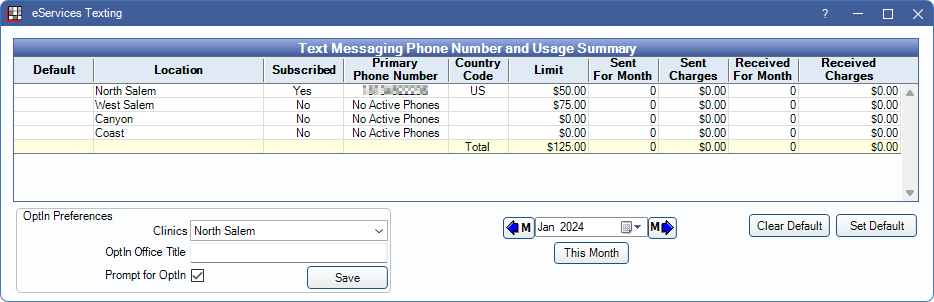

eServices Texting
View a summary of each location's text message history.
In eServices Setup, click Texting Services.
Also see:
 Webinar: eServices: Integrated Texting
Webinar: eServices: Integrated Texting- Text Message to send an individual text message.
Note: The eConnector must be running at all times to track monthly limits and overages. If it is not running, text messages can be sent, but tracking information is inaccurate and customer replies are not recorded.
Date Range
By default, usage information for the current month is shown. Use the arrows or calendar below the grid to change the month.
- Click the left or right arrows to move forward/back one month.
- Click the calendar dropdown to select a month using the calendar.
- Click This Month to quickly switch to the current month.
Default Clinic
When using clinics, only patients assigned to a clinic receive text messages, or there must be a default texting clinic. To set a default texting clinic:
- Select the clinic.
- Click Set Default. X is displayed in the Default column. This clinic is used when a patient's clinic is set to Unassigned in the Edit Patient Information window.
To remove a default, click Clear Default, or select a different clinic default.
Text Messaging Phone Number and Usage Summary Grid
Column definitions:
- Default: The default texting clinic is marked with an X.
- Location: The name of the clinic/practice.
- Subscribed: Indicates if the location is signed up for integrated texting.
- Primary Phone Number: The location's texting phone number. The number is based only on the office's country, so obtaining a number with a local area code is not guaranteed. It is not possible to select a phone number from a list or alter this number.
- Country Code: Where clinic/practice is located. This determines per message fee.
- Limit: SMS Warning Amount for the clinic.
- Sent for Month: The total number of outgoing text messages sent during the currently selected month.
- Sent Charges: The total amount of charges for outgoing texts for the currently selected month.
- Received for Month: The total number of incoming text messages received during the currently selected month.
- Received Charges: The total amount of charges for incoming texts for the currently selected month.
- Total: Pale yellow row at the bottom of the grid is the sum of the individual columns for all locations.
Note:
- Open Dental HQ attempts to send outstanding message receipts for outbound messages for up to 60 days. If after 60 days, the receipts could not be delivered, they are deleted. Receipts includes the charge associated with the message and the message's deliver status.
- The eConnector must be running to receive receipts. If receipts cannot be delivered, the Sent Charges column may not be up to date. Charges displayed here may not match the amount billed on the Monthly Support statement.
OptIn Preferences
Determine the office title and OptIn prompt when obtaining texting consent from a patient. For more information on texting consent, see Texting Terms of Service.
- Clinics: Select the clinic to view or apply changes to.
- OptIn Office Title: Enter the practice name to use when sending an OptIn text message. If left blank, the Practice Title set in Practice Setup is used. If both are blank, "Your Dentist" is used.
- Prompt for OptIn: Determines if a prompt appears when setting a patient's Text OK status to Y (Yes) in the Edit Patient Information window.
- Checked: When setting the Text OK status to Y for a patient, a prompt displays which asks the user to send an OptIn text to the patient.
- Unchecked: When setting the Text OK status to Y for a patient, no prompt displays to send an OptIn text. Users must remember to obtain consent from the patient.
- Save: Click to save changes to OptIn Preferences settings.